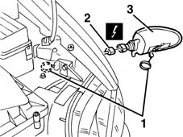

5550C30 l/h or r/h front turn signal (one) - r+r
- Path
- Procedures > 55 ELECTRICAL EQUIPMENT > 5550 WARNING AND MANOEUVRING INDICATORS > 5550C TURN SIGNAL/HAZARD WARNING LIGHTS > 5550C30 l/h or r/h front turn signal (one) - r+r
- Kind
- repair procedure (removal / refitting; the operation number is the code)
- Applies to
- all engines; all production periods
- Interactive page
- https://sloeber94.github.io/elrnDB-fMltpl/en/#/2891951
Applies to: all engines; all production periods
 Removing
Removing
 Refitting
Refitting1. Open the bonnet lid and release the rod and spring for the direction indicator.
2. Move the direction indicator slightly and disconnect the electrical connection.
 | Name | Connector |
|---|---|---|
2 | Left headlamp | F10B |
| Name | Connector |
|---|---|---|
2 | Right headlamp | F11B |
3. Recover the direction indicator.

Applies to: all engines; all production periods
Refitting
RemovingCheck that the direction indicator is not damaged and that the bulb is working properly.
Connect the electrical connection.
Position the direction indicator.
Attach the rod and spring for the direction indicator.
Check the operation of the direction indicator.
Topics that link to this page (7)
- I10 DIRECTION INDICATORS / HAZARD WARNING LIGHTS / NOT WORKING
- 1004B12 power unit with manual gearbox - r+r for versions with a/c
- 5540B20 dipprd beam (1), lh or rh - r r
- 5540C24 MOTOR (ONE) FOR L/H OR R/H HEADLAMP/LIGHT CLUSTER ALIGNMENT CORRECTION - R+R
- 5550C18 bulb of one front turn signal, l/h or r/h - r+r
- 5580E46 ANTITHEFT DEVICE ECU / SIREN UNIT R + R
- 7055B10 LH OR RH REFLECTOR(ONE) ON REAR BUMPERS - R R